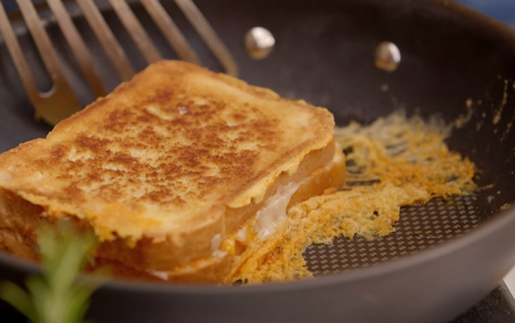

Kaastosti
Een lekkere kaastosti als voor gerecht, het kan ook worden gebruikt als lunch.
Ingrediënten
- 2 witte boterhammen
- 1 blok cheddar
- 1 blok franse kaas
- roomboter
- 50 gram bacon
Bereidingswijze
- Smeer de 2 boterhammen in met boter. Beleg ze daarna met kaas.
- Warm de pan op en smeer hem in met boter
- Leg de boterhammen in de pan tot ze lekker goudbruin gegaard zijn.
- Haal de boterhammen uit de pan en snij ze diagonaal.

Tip Lekker met pindasaus of zelfs met ketchup.
klik hier voor het hoofdgerecht
klik hier voor het nagerecht